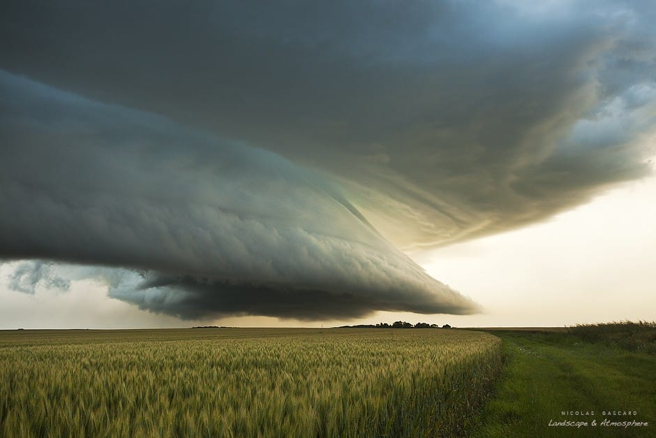

Updraft
Courant ascendant puissant alimentant continuellement la cellule orageuse.
STORMLAB • ORAGES ORGANISÉS
Des orages particulièrement organisés capables de maintenir de puissants courants ascendants et de produire des phénomènes violents.

STRUCTURE
Une supercellule possède généralement un courant ascendant rotatif durable appelé mésocyclone.
01 • STRUCTURE
Courant ascendant puissant alimentant continuellement la cellule orageuse.
Rotation profonde associée au courant ascendant principal.
Courant descendant transportant précipitations et air refroidi vers le sol.
Variation du vent avec l'altitude pouvant favoriser l'organisation des orages.
02 • TYPES
Structure équilibrée entre précipitations et courant ascendant.
Structure avec une importante quantité de précipitations autour de la circulation.
Structure relativement peu chargée en précipitations.
Certaines supercellules peuvent générer des tornades dans des conditions favorables.
03 • OBSERVATION
L'analyse d'une supercellule combine l'observation du ciel, les données radar, le vent, la structure des nuages et l'évolution du système.
📡 Analyser le radarSTORMLAB
Observer ne signifie jamais prendre de risques inutiles.
🚗 Storm Chasing